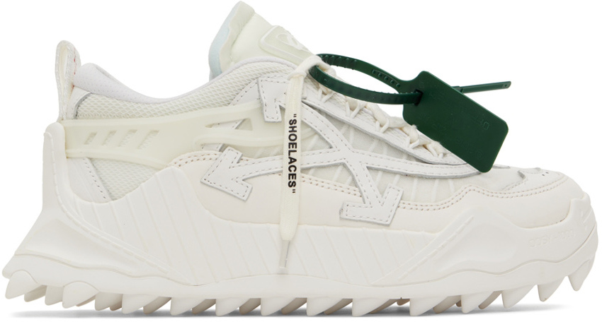

Off-White is like the rest of the hyped brands with the name comes the price. They look pretty basic and the only thing that stands out is the amount of times they plaster their logo all over their products. Sometimes they can have some good ideas when it comes to shoes, but overall they are just a pricey name. Once you understand the idea of a name brand, you would know what I mean. Most brands would need to prove themselves before they could actually get to that level. Off-White is way past this and is in the whatever is fashion phase. I seen ross in better place.
Like I was saying actually, you can see for yourself. You feel that? Its the pain in the eyes maybe thats just me. Looking at this I think who had the idea and why did they like it? To put a price on it says alot about how they love their fans or what fans they even have anyways. Honestly maybe I care a little too much but I just love to waste my time giving my opinon on here Im just having fun at this point. enjoy yourself for some more.